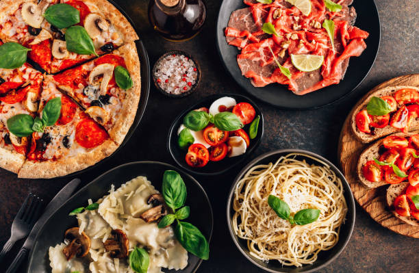

Pasta, Pizza, and More!
Italian cuisine is known for its delicious pasta dishes, flavorful pizzas, and exquisite wines.
Italian cuisine is a Mediterranean cuisine consisting of the ingredients,recipes and cooking techniques developed across the Italian Peninsula
and later spread around the world together with waves of Italian diaspora. Some of these foods were imported from other cultures.
Significant changes occurred with the colonization of the Americas and the introduction of potatoes, tomatoes, capsicums, maize and
sugar beet—the latter introduced in quantity in the 18th century. It is one of the best-known and most appreciated gastronomies worldwide.